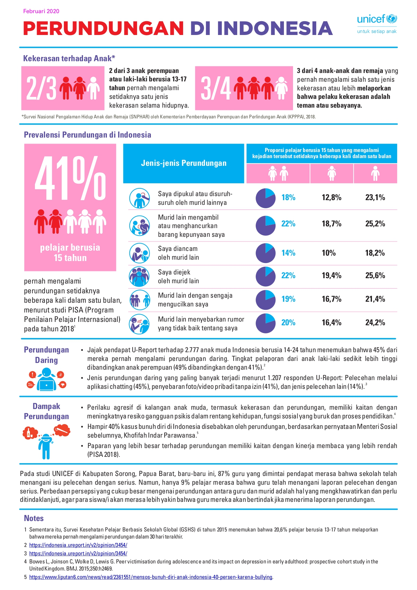

Undang-undang (UU) Nomor 35 Tahun 2014 tentang Perubahan atas Undang-Undang Nomor 23 Tahun 2002 Tentang Perlindungan Anak mempertegas tentang perlunya pemberatan sanksi pidana dan denda bagi pelaku kejahatan terhadap anak, untuk memberikan efek jera, serta mendorong adanya langkah konkret untuk memulihkan kembali fisik, psikis, dan sosial anak korban dan/atau anak pelaku kejahatan. Hal tersebut perlu dilakukan untuk mengantisipasi anak korban dan/atau anak pelaku kejahatan di kemudian hari tidak menjadi pelaku kejahatan yang sama.
Pasal 76C dan Pasal 9 Ayat (1a) Undang-Undang No. 35 Tahun 2014 memberikan perlindungan bagi anak dari kekerasan, termasuk kekerasan di lingkungan pendidikan.
Pasal 76C UU 35/2014 mengatur bahwa setiap orang dilarang menempatkan, membiarkan, melakukan, menyuruh melakukan, atau turut serta melakukan kekerasan terhadap anak. Jika larangan melakukan kekerasan terhadap anak ini dilanggar, pelaku bisa dijerat Pasal 80 UU 35/2014.
Dasar Pemikiran
Melansir Very Well Family, Sherri Gordon, seorang certified professional life coach, menjelaskan beberapa tipe dari bullying. Tentunya yang paling umum adalah verbal bullying, yakni melakukan perundungan dengan kata-kata atau ucapan yang menyakitkan. Ada juga physical bullying, penindasan yang melibatkan fisik, seperti menendang, memukul, mendorong, dan semacamnya.
Selain itu, jenis lainnya adalah relational aggression, yakni ketika kita mengucilkan atau memfitnah orang lain, yang bisa disebut juga sebagai intimidasi emosional. Selanjutnya, ada cyberbullying, perundungan yang dilakukan melalui media digital, biasanya menggunakan identitas anonim.
Jenis berikutnya yaitu sexual bullying, ketika melakukan intimidasi seksual, seperti gerakan vulgar, komentar vulgar, dan sebagainya. Terakhir adalah prejudicial bullying, yakni saat memiliki prasangka buruk terhadap kelompok, ras, agama, atau orientasi yang berbeda dengan kita.
Melansir dari data Komisi Perlindungan Anak Indonesia (KPAI) dan Federasi Serikat Guru Indonesia (FSGI), tercatat terjadi 226 kasus perundungan pada tahun 2022 yang menjadi teror untuk anak-anak di sekolah. Beberapa jenis perundungan yang terjadi oleh korban di antaranya adalah bullying fisik (55,5%), bullying verbal (29,3%), dan bullying psikologis (15,2%).
Sedangkan, tingkat jenjang pendidikannya siswa SD menjadi korban bullying terbanyak sekitar (26%), siswa SMP (25%), dan siswa SMA (18,75%). Pada studi UNICEF di Kabupaten Sorong, Papua Barat, baru-baru ini, 87% guru yang dimintai pendapat merasa bahwa sekolah telah menangani isu pelecehan dengan serius. Namun, hanya 9% pelajar merasa bahwa guru telah menangani laporan pelecehan dengan serius. Perbedaan persepsi yang cukup besar mengenai perundungan antara guru dan murid adalah hal yang mengkhawatirkan dan perlu ditindaklanjuti, agar para siswa/i akan merasa lebih yakin bahwa guru mereka akan bertindak jika menerima laporan perundungan.
Fakta Perundungan di Indonesia

Sumber Artikel : https://www.unicef.org/indonesia/media/5691/file/FactSheetPerkawinanAnakdiIndonesia.pdf